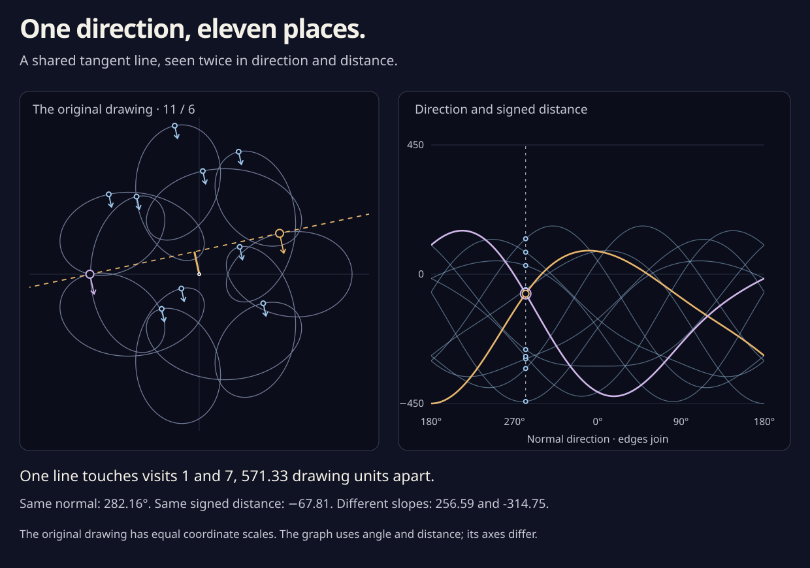

One direction, eleven places.
The curve’s direction keeps turning forward, eleven times around. Pick one normal direction: eleven different places face that way. Unfold their tangent lines into a second drawing.
Turn the normal, then follow any of its eleven visits.
- Selected visit
- Signed distance · drawing units
- Slope · drawing units per radian

What do the two coordinates mean?
The left normal is the travel direction turned a quarter-turn counterclockwise. A tangent line is perpendicular to that normal. Its signed distance h is the projection of the point onto the normal: h = x cos θ + y sin θ. The line consists of all points with that same projection. A negative value places it on the opposite side of the origin from the arrow.
The normal starts pointing left, at 180°. Turning it once reveals eleven visits because the curve’s direction makes eleven forward turns in one orbit. At the graph’s right edge, each strand joins the next strand’s left edge. The last joins the first: it is one closed trace, cut into eleven pieces.
Why do two distant places meet in the graph?
“Show a shared tangent” picks two places with the same normal and the same signed distance. Their tangent lines coincide, so their dots meet in the graph. They are still far apart in the original drawing.
The graph’s slope keeps the missing information: dh/dθ = −x sin θ + y cos θ. Together, distance and slope recover the original point. Equal distance with different slopes therefore describes two places on one line. Equal direction, distance, and slope would describe a meeting with matching travel directions, a direct touch.
What is exact, and what is drawn?
A uniform positive-curvature bound proves that the normal always turns forward, and an elementary velocity factor proves that it makes exactly eleven turns. Those statements hold on the whole blend between these two drawings. The displayed eleven visits follow from that argument; the controls show its two endpoints.
A separate rational cover now certifies exactly 106 shared oriented tangent lines on each endpoint, each represented by two distinct points traveling the same way. Their fronts have 106 ordinary crossings, with no cusp or higher meeting. These are different from the original drawing’s forty crossings. Read the complete tangent-line count ↗
Two small rational contraction boxes certify the selected shared tangent lines, with their points more than 500 drawing units apart. The curves and inverse angles shown here use floating-point arithmetic. The count does not distinguish the associated knots. The picture follows the coordinate construction in Lenhard Ng’s Plane curves and contact geometry, §2.1. Read the derivation and checks ↗